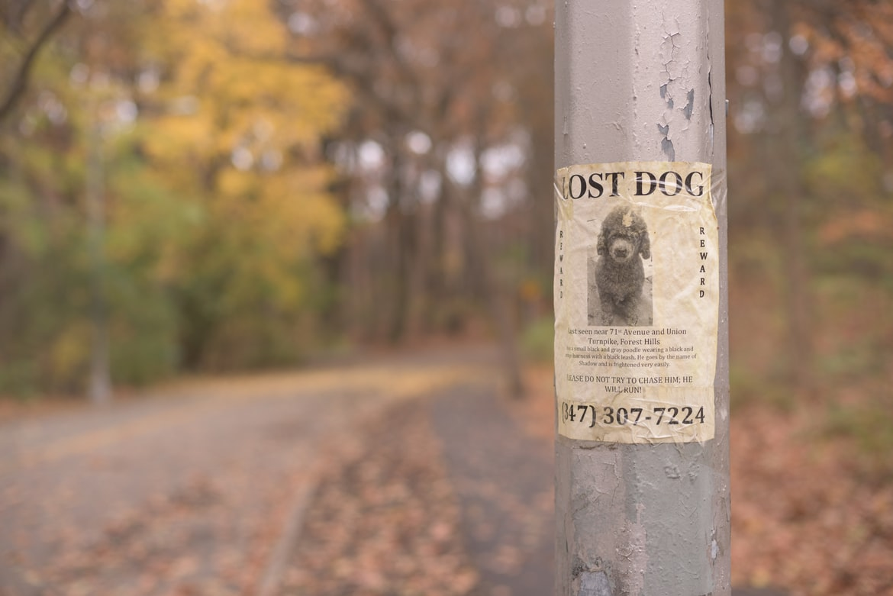

Naše blogy
Zoznam všetkých naších blogov na jednom mieste!
STRATIL SA MI PES – ČO TERAZ?
Nech sa akokoľvek snažíme, občas sa niekomu prihodí takáto nepríjemná situácia. Čo teda robiť, keď sa mi stratí pes? Na to pozrieme v tomto článku. Najskôr si ale povedzme, ako sa preventívne pripraviť na takúto situáciu. Čo môže pomôcť aby sa k vám psík rýchlo vrátil, ak ho niekto nájde? Čip – v dnešnej dobe je čipovanie povinné, takže by ho mal…
Čítať ďalej→
PREČO JE ADOPCIA STARŠIEHO PSÍKA SUPER ?

Ak nemáte potrebu mať doma čistokrvného psíka a chcete si nejakého zaobstarať, ideálne je pozrieť sa do útulku. Na výber ich budete mať neúrekom. Od roztomilých šteniatok, ktoré si vás hneď získajú, až po starších psíkov. Dnes sa pozrieme na adopciu staršieho psíka. Keď sused zháňal nového psa, chcel šteniatko. Lebo je zlaté a on sa s ním chce pohrať…
Čítať ďalej→
DAŇ ZA PSA

Daň za psa je povinný platiť každý majiteľ psíka. Platenie daní upravuje zákon č. 582/2004 Z. z. o miestnych daniach a miestnom poplatku za komunálne odpady a drobné stavebné odpady. Kto je povinný platiť dane? Každý, kto má psíka staršieho ako 6 mesiacom. Výnimku tvoria majitelia alebo držitelia psov chovaných na vedecké a výskumné účeli, psíky v útulkoch a psík so…